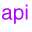

|
|
Referrals |


If you set the Context.REFERRAL environment property to "ignore", then any referral entries in the directory will be ignored and returned as plain entries. The LDAP provider will automatically send a Manage Referral control with the request for LDAP v3, telling the LDAP server to return the referral entries as plain LDAP entries. If the LDAP v2 is being used, then no control is sent.Here's an example.
Here is the output from running this example.// Set the referral property; this is optional // because "ignore" is the default env.put(Context.REFERRAL, "ignore"); // Create the initial context DirContext ctx = new InitialDirContext(env); // Set the controls for performing a subtree search SearchControls ctls = new SearchControls(); ctls.setSearchScope(SearchControls.SUBTREE_SCOPE); // Perform the search NamingEnumeration answer = ctx.search("", "(objectclass=*)", ctls);>>> >>>ou=People >>>ou=All >>>ou=People, ou=All >>>ou=NewHires, ou=AllNotice that the entries "ou=People", "ou=People, ou=All", and "ou=NewHires, ou=All" are returned as plain entries rather than as referrals.
Servers That Don't Support the Manage Referral Control
A server that does not support the Manage Referral control will ignore the control and send back referrals as it encounters them. In this case, when the LDAP provider receives the referral, it will throw a PartialResultException to indicate that there might be more results if the referral is followed.
|
|
Referrals |